第32天：收集重定位信息
第32天：收集重定位信息
上节课说，为了让链接器能够正确修补地址，每个目标文件（.o）都会维护一张重定位表（在 ELF 格式中通常称为 .rel.text 或 .rel.data）。
让汇编器生成 .o 是下节课的内容。这节课，我们为生成重定位表做些准备。
上节课我们把文件 a.o 的重定位表总结成了下面的表格
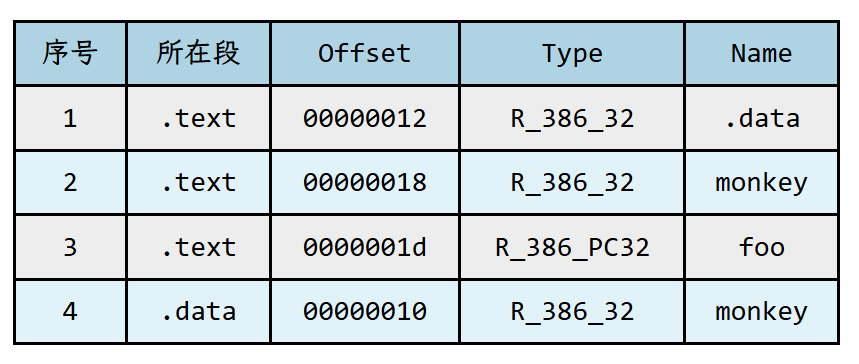
这节课，我们的任务就是要生成这样的表格。
寻找要重定位的符号
首先，要找到需要重定位的符号。
如何找呢？答案就是从产生式里面找，凡是用到（不是定义） ASS_ID（标识符）的地方，就可能需要重定位。
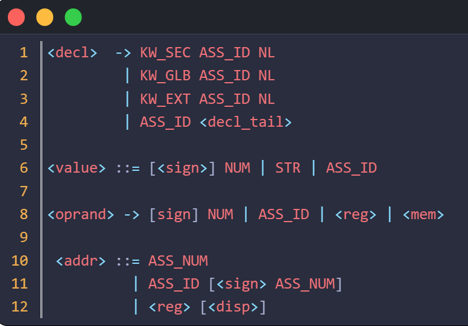
包含 ASS_ID 的产生式都在这里了。
第 1~4 行，不是引用符号，是定义符号。
第 6、8、11 都是对符号的引用。
分别是三种场景。
第 6 行，数据定义中引用了数据符号。
第 8 行，符号作为指令的操作数。
第 11 行，地址中引用符号。
数据定义中引用了数据符号
根据第 6 行的产生式，找到解析 <value> 的代码：
1 | |
如果读者觉得代码陌生，我们搬出上一节开头的例子。
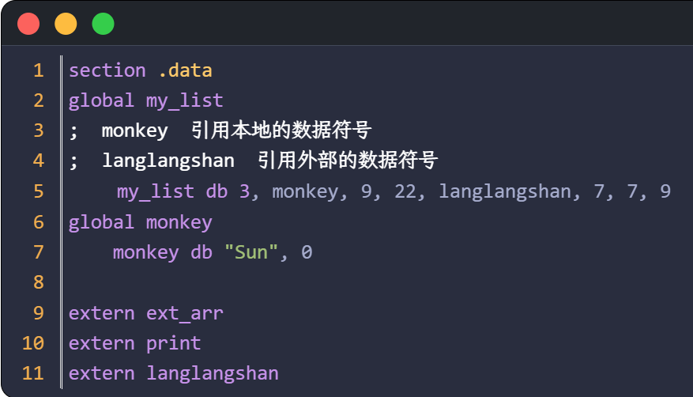
汇编代码第 5 行，解析 monkey 和 langlangshan，就会执行 case ASS_ID:
引用本地和外地的数据符号，需要重定位。
请读者思考，能否在这里添加一段代码，生成重定位条目？
上一节课，我们讲了重定位条目（Relocation Entry）至少包括 4 个核心信息：
- 偏移
- 类型
- 符号名
- 加数
先说类型，对于数据符号肯定是 R_386_32；
再看符号名，对于外部的数据符号就是这个符号的名字，对于内部的数据符号，就是.data；至于为什么是.data，这个问题在上节课我们已经弄明白了；
再看加数，就是 sym->addr 的值，代表符号在数据段的偏移，如果是外部符号，这个值肯定是 0；
最后看偏移，似乎有点难，如何计算被重定位的符号在数据段的偏移？
请看下面的代码：
1 | |
我的问题是，解析到 cat 的时候，如何计算 cat 在数据段的偏移？
其实就是计算 cat 之前的所有数据定义占多大的内存。
这个值分为三个部分：
一是当前段计数器的值，因为正在解析 my_list，计数器的值尚未更新，所以它表示 my_list 之前的数据大小。
二是第 6~7 行的 2 个 item 所占的大小，因为这 2 个 item 已经通过 new_item_add 函数提交了，大小可以用 init_val_t 结构体的 cur_addr 表示
三是当前链表上已经收集的数据的总大小，也就是 monkey 和 dog 一共占的大小。
把这三部分加起来，就是 cat 在数据段的偏移。
所以有代码：
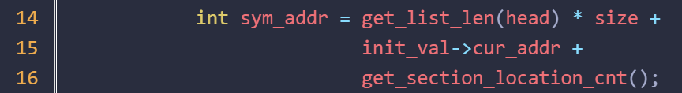
解决了偏移后，下面要设计一个结构体，把偏移，类型，符号名，加数这些信息收集在一起。
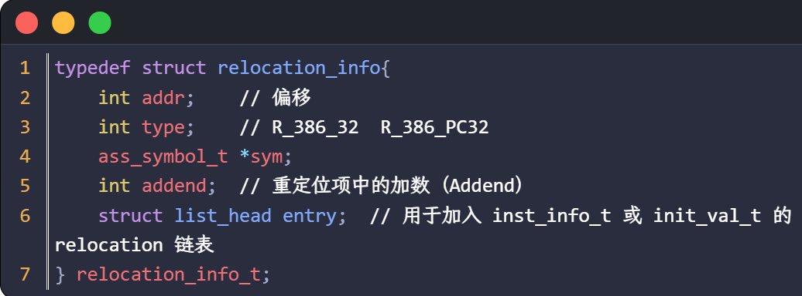
这是 relocation_info_t 结构，用来描述一个“重定位条目”。
第 2 行表示偏移，就是需要被修正的内容在当前段内的偏移地址。
第 3 行是类型，R_386_32 或 R_386_PC32；
第 5 行表示加数；
第 4 行是要重定位的符号 sym；
按理说第 4 行应该是符号的名字，不过为了收集更多的信息，方便调试，索性不保存名字，直接保存符号的指针。
其实 ass_symbol_t 结构体里面有 addr 这个字段，这样看来第 2 行都不需要了。但是我决定保留第 2 行，这样看起来一目了然。
还有的读者会疑惑，如果是引用内部的数据符号，那么要重定位的符号不是这个符号的名字，应该是 .data；
是的，观察得非常仔细！这是一个问题，先记住，后面会讲。
光有上面这个结构还不行，还需要有创建条目的代码。
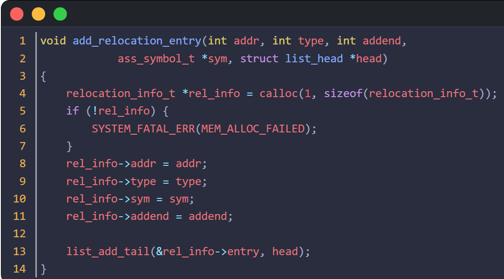
add_relocation_entry 函数做了 2 个工作，一个是分配内存，用参数初始化 relocation_info_t 结构体，一个是把这个结构加入链表。
加入哪个链表呢？
看一下刚才的 value 函数，我们是在这个函数里面发现符号需要重定位，在 value 函数的参数参数 init_val 指向的结构体里面增加一个链表的头节点，把重定位条目挂在这个链表上是比较合理的，表示某个数据定义的初始值中包含需要重定位的符号。
(如果你想定义一个全局变量作为链表的头节点，把重定位条目挂上去也不是不行。）
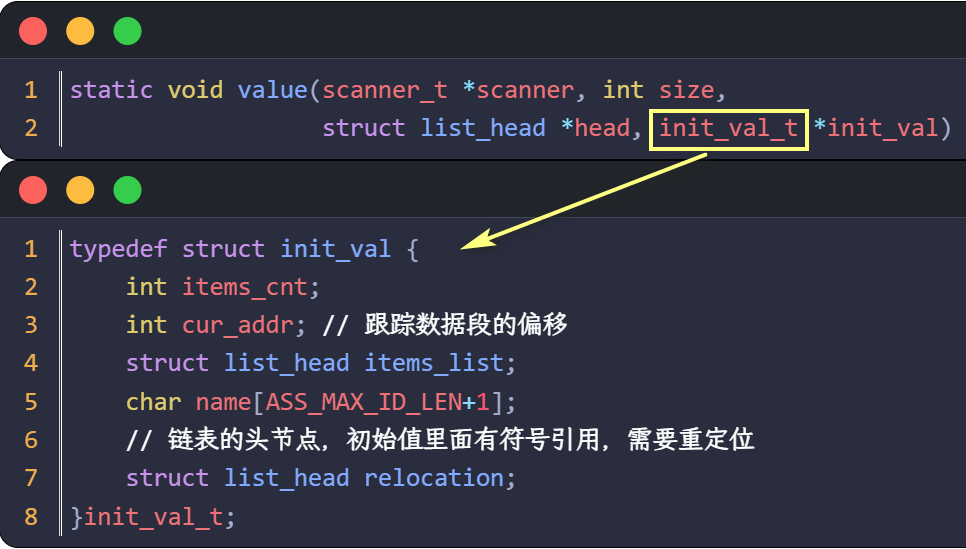
所以，第 6 行定义了链表的头节点。
可是为什么是链表？
弄一个 relocation_info_t 类型的字段是不是也可以？
回到上面的例子：
1 | |
my_list 的初始值中，monkey, dog, cat 这三个符号都要重定位，所以需要链表，把这三个条目链起来。
符号作为指令的操作数
三个地雷扫了一个。还有 2 个产生式要分析。
1 | |
相关联的代码是 oprand 函数
1 | |
虽然这里的符号需要重定位，但是在这里生成重定位条目恐怕不行。
还是考察四个要素：偏移，类型，符号名，加数;
偏移，不知道，因为不知道具体的编码格式;
类型，不知道，如果是 call 或者 jmp 指令的操作数，那就是 R_386_PC32；如果是类似于 mov eax, list，那就是 R_386_32；
加数，就是 sym->addr 的值；
名字，如果引用的是内部的数据符号，就是 .data；其他情况是 sym->name；
所以，这里无法生成重定位条目，因为缺少偏移和类型信息。
注意，偏移和类型也不是没有办法知道，因为代码执行到这里，关于指令的信息就收集得差不多了，当然可以从有关结构体里面把某些字段找出来，再经过一番计算得出答案。
但是延迟到指令编码的时候更合理，因为指令编码的时候会解析是什么指令，也会计算偏移。
所以把这个符号记录下来，等到了生成指令编码的时候，再为它添加重定位条目。
如何记录呢？可以在操作数的结构体里面加一个字段。
1 | |
第 7 行的 related_sym，如果操作数里面包含符号，就把符号的地址赋值给 related_sym；
为什么这里不是链表，而是一个指针呢？
csub 生成的汇编代码，一个操作数最多包括一个符号，还没有遇到过包含两个符号的情况。所以一个指针就够了。
地址中引用符号
下面，看最后一个地方。
1 | |
同理，找到解析 addr 的代码:
1 | |
能执行到这里，说明指令形如
mov al, [list + 4]
mov eax, [list]
同理，第 14 行记录符号。到了指令编码阶段，再为它添加重定位条目。
重定位类型，应该是 R_386_32；因为我们生成的 jmp 或者 call 指令后面是一个 32 位的偏移，而不是内存操作数。
加数，是 operand->disp;
名字，是 .data（对于内部符号） 或者 sym->name（对于外部符号）;
这里，我们再复习一下重定位，因为这个概念太重要了。
假设指令是 mov al, [list + 4]；那么第 12 行的 num 就是 4；
在高级语言中，list 很可能是一个字符类型的数组，这条指令的目的是把 list[4] 的值给寄存器 al;
list 可能是本地的符号，也可能是外部的符号;
如果是前者，假设 list 的定义在数据段的偏移是 12;
sym->addr + num = 12 + 4 = 16;
那么生成指令 mov al, [16];
加数就是 16;
重定位的时候， 给出的条目是：
- 偏移：？
- 类型：R_386_32
- 符号：.data
- 加数：16
假设 .data 段的虚拟地址是 Base;
根据公式， S + A = Base + 16;
修正后的指令是 mov al, [Base + 16];
Base + 16 代表 .data 段偏移 16，
先偏移 12，找到数组 list，再偏移 4 就是 list[4]，和高级语言语义一致，没有问题。
如果 list 是外部的符号，它的偏移地址就是 0;
针对 mov al, [list + 4] 生成指令;
mov al, [4]
加数是 4
重定位的时候， 给出的条目是：
- 偏移：？
- 类型：R_386_32
- 符号：list
- 加数：4
假设 list 的虚拟地址是 Base
根据公式， S + A = Base + 4
修正后的指令是 mov al, [Base + 4]
意思是 list 的地址偏移 4，就是 list[4]，没有问题。
添加重定位条目
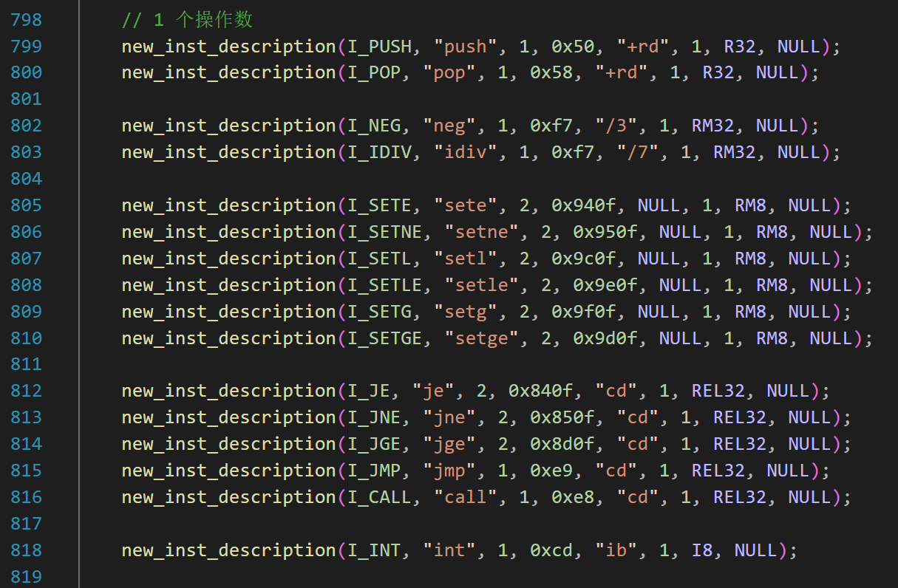
针对 1 个操作数的指令，目前就这么多。
针对 csub 生成的汇编代码，push，pop 不用考虑，因为它俩的操作数都是寄存器。
同理，从 neg 到 setge 也不用考虑。
第 818 的 int 指令，现在没有用，但是后面会用，一般是 “int 128”，也不需要考虑。
所以，只需要考虑 812~816；也就是编码规则带 “cd” 的。
1 | |
第 12 行，取出 related_sym，也就是要重定位的符号。肯定不为 NULL，因为 jmp、call 这类指令后面都跟着标号。
如果是外部符号，才需要重定位，所以有 sym->is_ext；
应该是解析指令 call xxx，因为 jcc 类的指令引用的都是本文件的标号。
add_relocation_entry 的 5 个参数，分别是:
- 偏移
- 类型
- 加数
- 符号结构体的地址
- 链表的头节点
先看偏移，我们采用的 call 指令格式是 call rel32（近调用）;
主操作码是 0xe8，后面跟着 4 字节的偏移；需要重定位的位置就是这 4 个字节的偏移；
因为编码这条指令的时候，当前段计数器的值还没有更新，它记录的是之前的所有指令占用的内存大小。
所以偏移就是当前段计数器的值，再加 1 字节；
第 7 行，操作码的长度 descrip->pri_opcode_len 已经累加到 inst_code.total_len 了。
类型是 R_386_PC32；
加数是 -4，上节课已经解释了。
符号就是 related_sym.
链表的头节点呢？
1 | |
我在 inst_info_t 结构中增加了 relocation；
刚才是单操作数，现在看双操作数。
1 | |
我们看 new_inst_description 函数最后 2 个参数，就是操作数的格式。
对于 R8，R32，这是寄存器，不牵扯重定位。
立即数 I32 可能需要重定位，形如 mov eax, monkey；因为这里的 monkey 是作为立即数处理的。
RM32 等内存操作数，可能需要重定位，例如
mov eax,[monkey]
mov eax,[monkey + 10]
所以，我们要关注和 I32、 RM32 有关的代码。
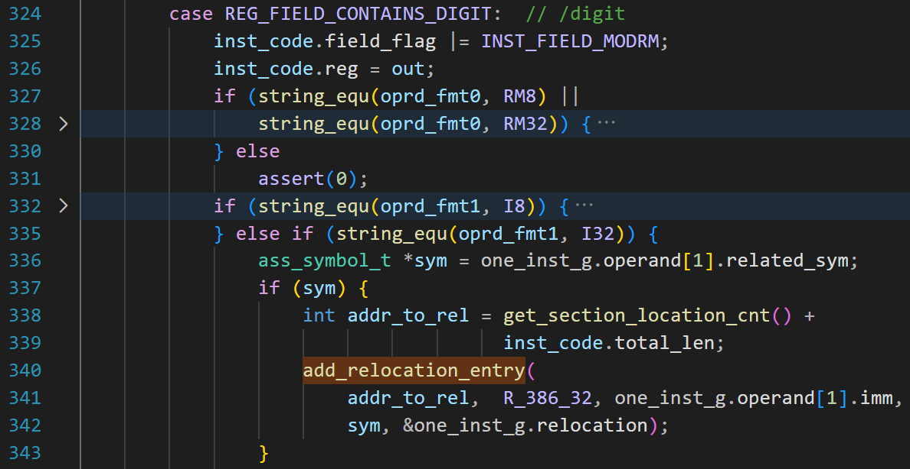
上图的代码函数是 encoding_2_op_inst 的一部分；
第 336~343，是对重定位的处理；
第 341 行，传入 5 个参数。第 1 个是偏移地址，道理和前面一样，不赘述。第 3 个参数是加数，因为 operand() 函数是把 sym->addr 保存到了 operand->imm 中。
最后，我们看看和 RM32 有关的代码。
下图是 set_modrm_field 函数的一部分
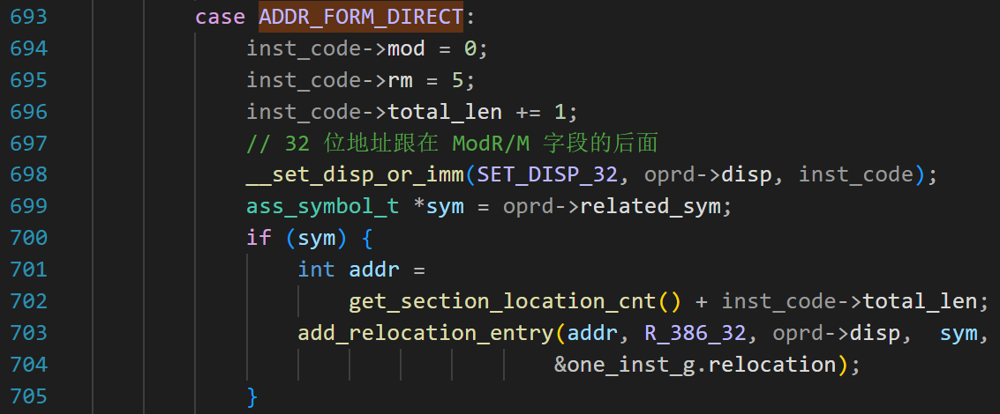
如果指令形如
mov eax,[monkey]mov
eax,[monkey + 10]
就会执行第 693 行，属于直接寻址。
第 700~705 行，添加重定位信息。
代码说完了，下面是展示成果环节。
成果展示
我们写一个 .c
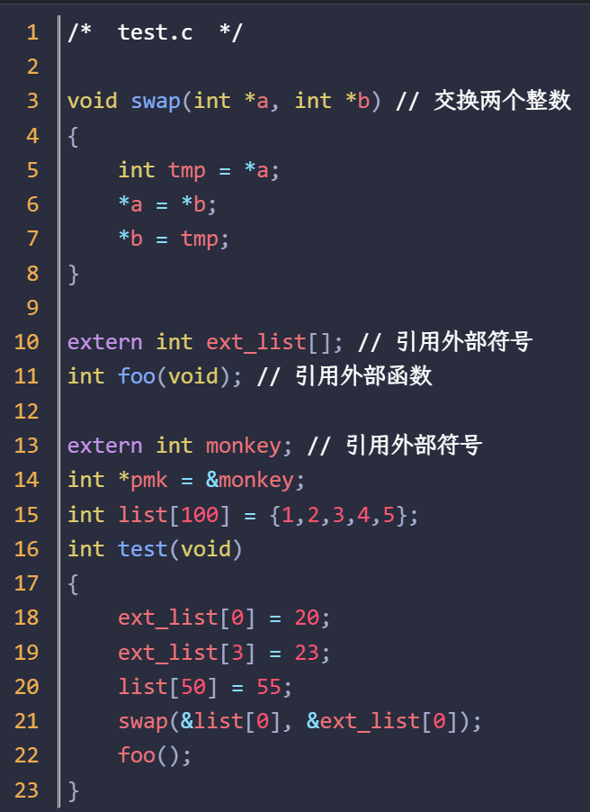
代码实现什么功能不重要，我们的关注点在重定位上。
用 csub 编译，生成的汇编代码如下（截取部分）
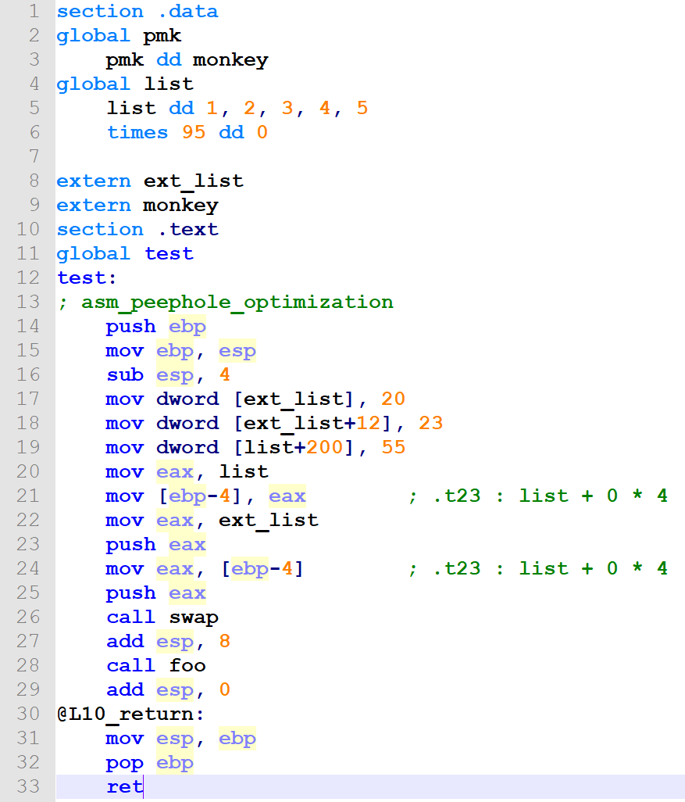
指令翻译结果是：
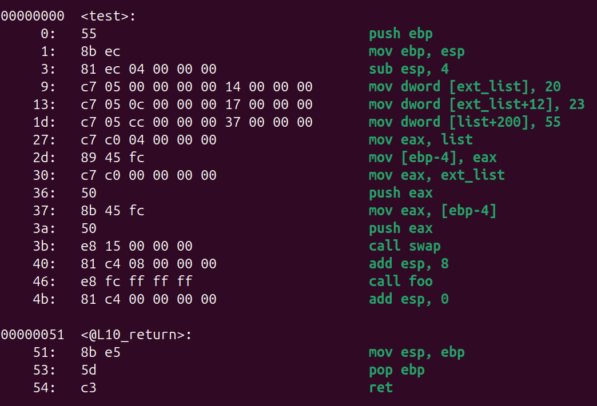
上图是我们的汇编器生成的，模仿 “objdump -d test.o” 的格式，左边是指令编码，右边是原来的指令。
还可以把重定位信息打印出来。
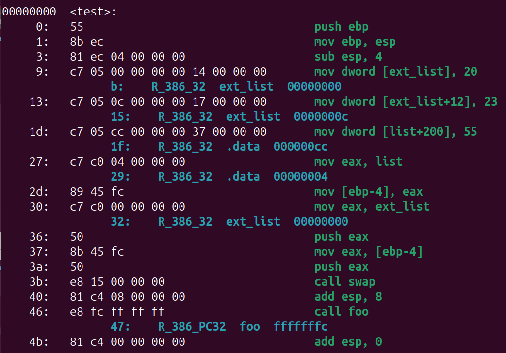
蓝色的字，从左到右分别是偏移、类型、符号名和加数。
本文到这里就结束了。下节课我们学习 .o 的格式。